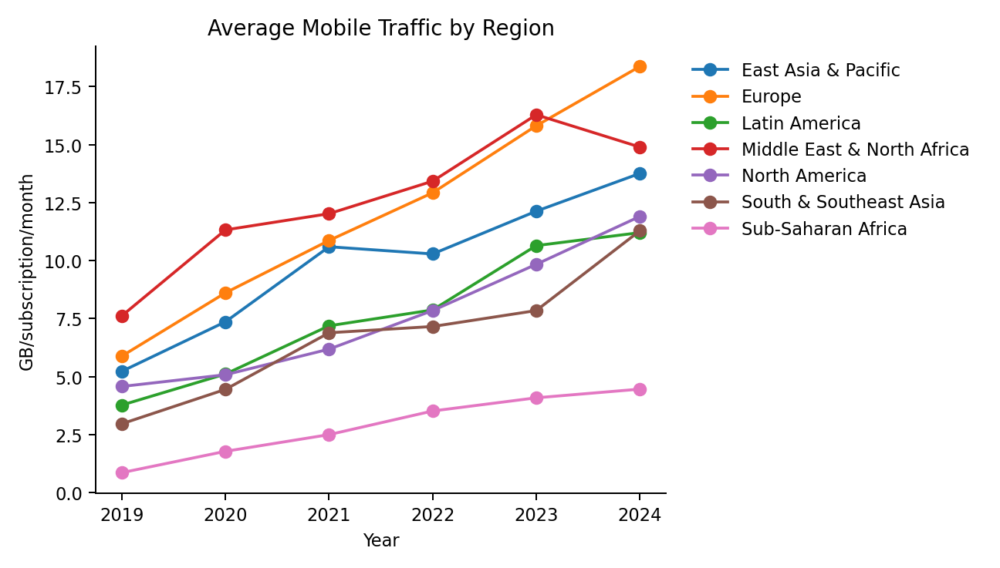
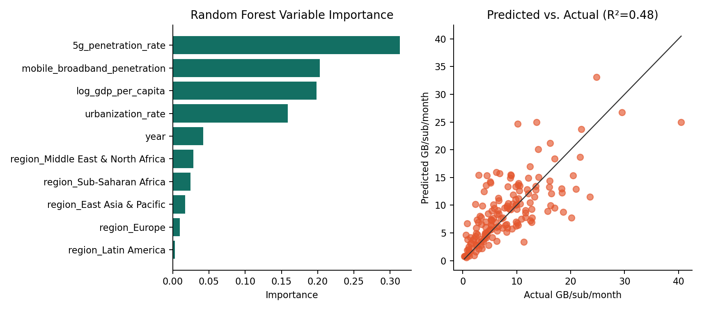

145countries after cleaning
806country-year observations
0.48Random Forest test R²
University of Toronto JSC370
A global country-year analysis of mobile broadband traffic, 5G rollout, income, urbanization, and regional differences from 2019 to 2024.
Country-years with at least 20% estimated 5G penetration consume on average 2.8 times more data per subscription than country-years below 5% penetration.
The country-year correlation between estimated 5G penetration and year-over-year mobile traffic growth is -0.05, reflecting a market maturity dynamic. The level correlation with mobile traffic per subscription is 0.48, indicating a strong relationship with absolute consumption.
Using an Ericsson-calibrated traffic-share trajectory, 5G traffic becomes the dominant source around 2026.

Figure 2: Average mobile traffic per subscription by region, 2019–2024. Europe and Middle East & North Africa show the steepest growth trajectories, while Sub-Saharan Africa remains persistently low despite positive growth. The divergence between regions has widened over the period, suggesting that 5G rollout and income levels are compounding rather than closing the digital divide. Use the dropdown to isolate individual regions.

Figure 4: Random Forest variable importance and prediction accuracy (R² = 0.48). Estimated 5G penetration rate is the strongest single predictor of mobile traffic per subscription. View all four interactive visualizations →
The cleaned dataset merges ITU DataHub mobile-broadband traffic, mobile-broadband subscriptions, mobile-cellular subscriptions, and mobile population coverage indicators with World Bank GDP per capita and urbanization data. Country-level 5G subscription counts were not available in the local ITU exports, so the project uses an explicitly flagged synthetic estimate calibrated from observed ITU 5G population coverage, year, and region.
A tuned Random Forest model and an XGBoost comparison model predict monthly GB per active mobile-broadband subscription using estimated 5G penetration, mobile broadband penetration, log GDP per capita, urbanization, region, and year.
† Based on synthetic 5G subscription estimate; see Methods for derivation.